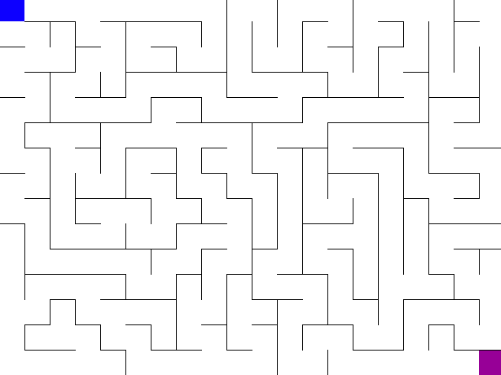
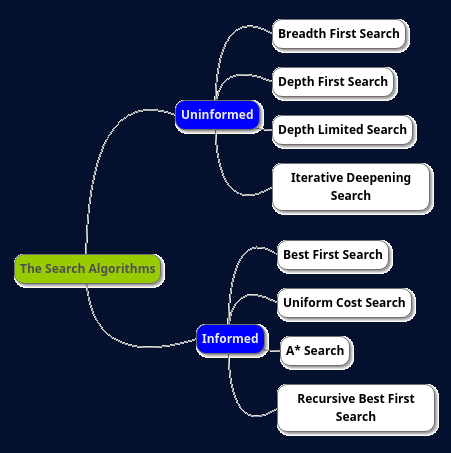

In Artificial Intelligence, Search techniques are universal problem-solving methods. Rational agents or Problem-solving agents in AI mostly used these search strategies or algorithms to solve a specific problem and provide the best result. Problem-solving agents are the goal-based agents and use atomic representation. 
Maze Search Algorithm
Following are the four essential properties of search algorithms to compare the efficiency of these algorithms:
 Here we will focus on Breadth First Search, Depth First Search and A* Search Algorithms